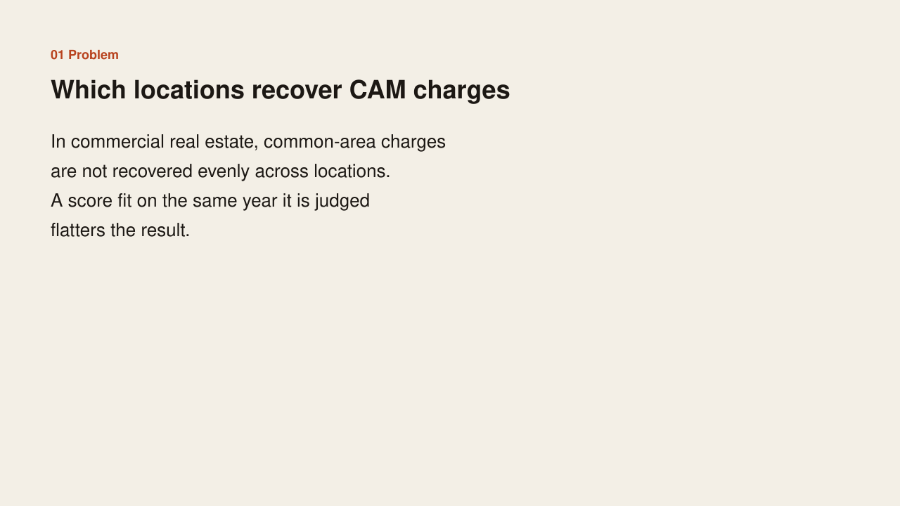
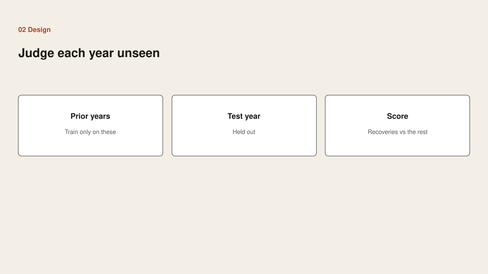
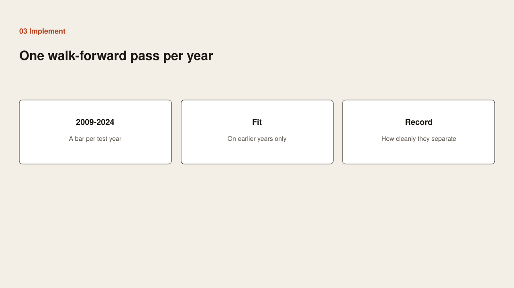

Problem
Problem

Common-area charges are not recovered evenly across locations. A score fit on the same year it is judged flatters the result.
Case study
Problem

Common-area charges are not recovered evenly across locations. A score fit on the same year it is judged flatters the result.
Design

Train only on earlier years. Hold out one test year. Judge how cleanly recoveries separate from the rest in that unseen year.
Implementation

Run one walk-forward pass per year from 2009 through 2024. Fit on the prior years only. Record a separation score for that test year.
Benefit

Each bar is a year the model had not seen. A taller bar is a year when recoveries and non-recoveries were easier to tell apart.